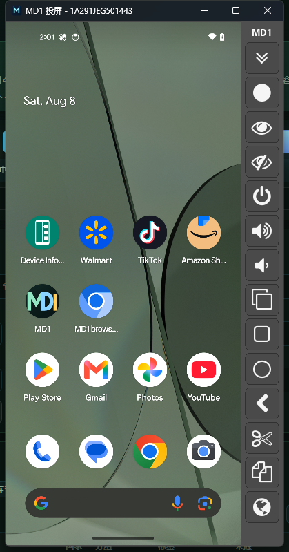
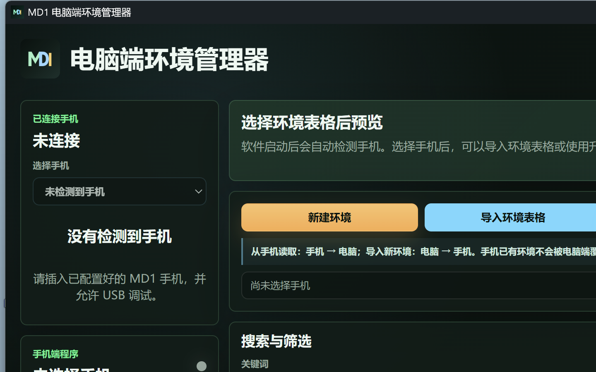
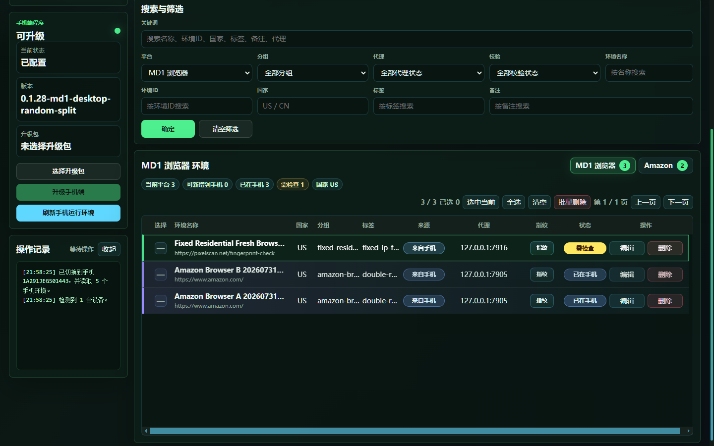
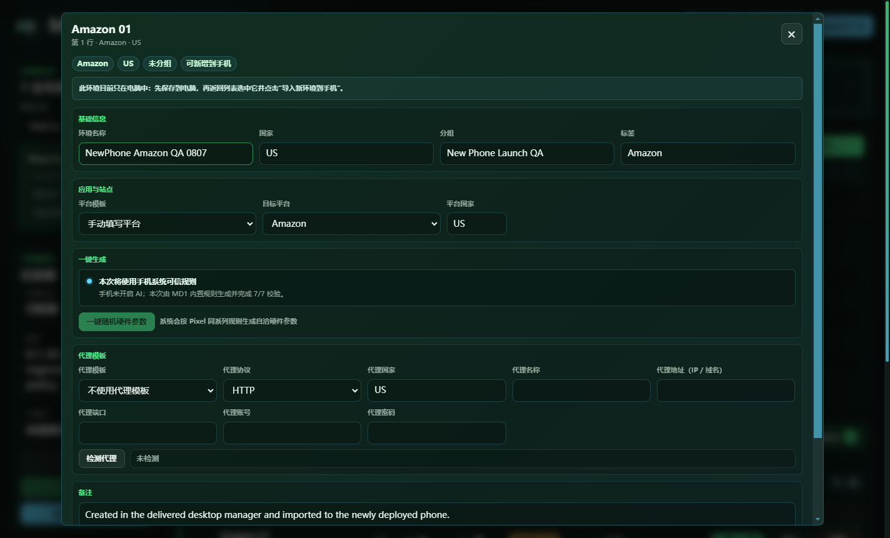
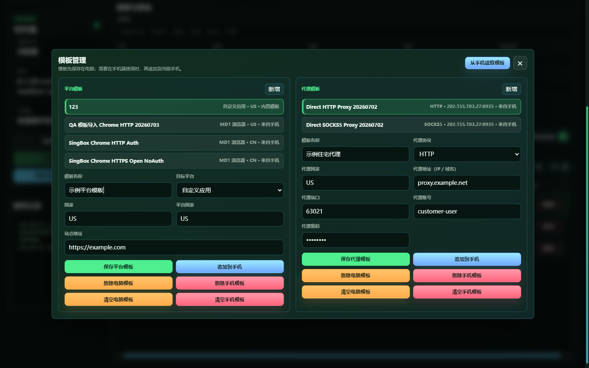
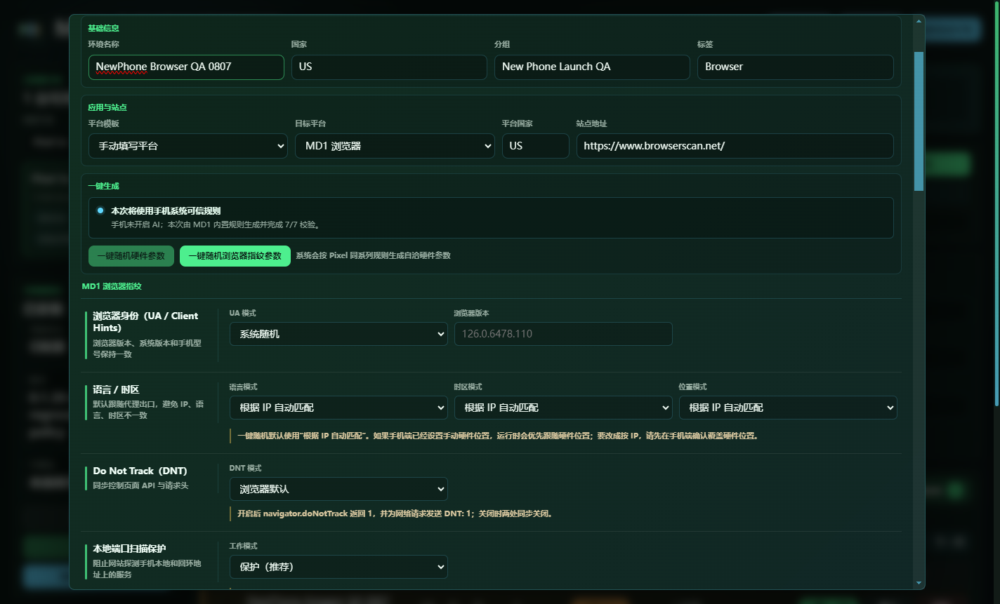
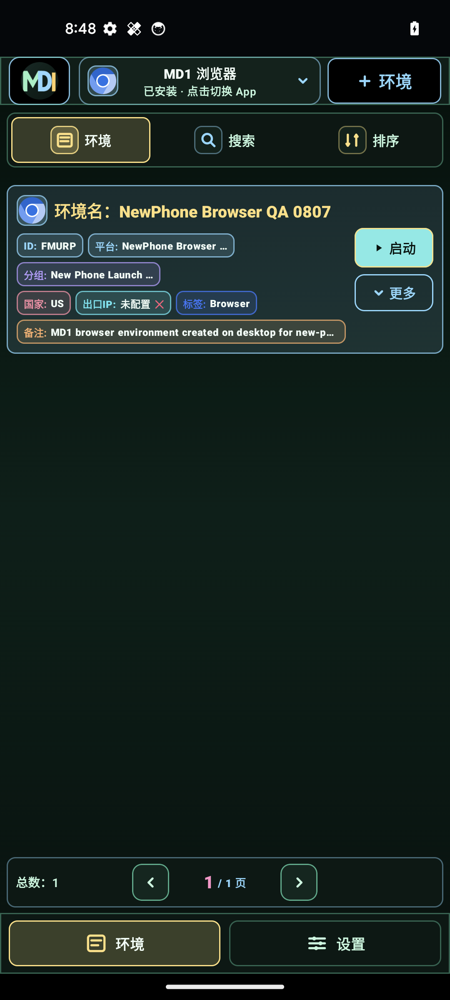
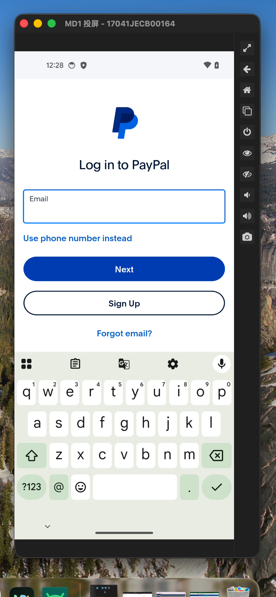

第一次使用时，按“连接并授权手机 → 新建或导入环境 → 检查设置 → 同步到手机 → 启动并检查”的顺序完成。电脑端用于管理环境，手机端用于实际启动环境。
需要离线保存？
下载与本页面内容同步的 Word 图文版，方便内部培训和日常查阅。
1. 使用前准备
请在开始操作前确认软件、手机和账号资料都已准备好。
- 将电脑端完整解压到固定文件夹，不要直接在 ZIP 压缩包内运行。
- 手机保持正常开机并解锁，使用稳定的 USB 数据线连接电脑。
- 首次连接手机时，在手机上确认 USB 调试授权，并勾选“始终允许使用这台计算机”。
- 目标 App 需要先安装到手机中；创建浏览器环境时，还需要准备要访问的网站地址。
- 如果环境需要代理，请准备协议、IP 或域名、端口以及认证信息。
- 批量导入时，请从当前电脑端重新下载模板，不要混用旧模板。

手机端状态正常时直接使用即可，不要反复安装手机端组件。只有收到明确的更新通知和对应更新包时，才执行手机端组件更新。
2. 连接手机并确认授权
所有写入手机的操作都依赖当前选中的手机，先确认连接再继续。
- 解锁手机并连接 USB 数据线，在手机提示“允许 USB 调试”时点击“允许”。
- 打开 MD1 电脑端环境管理器，等待左侧“已连接手机”区域刷新。
- 如果没有自动刷新，点击顶部“重新检测手机”，再在“选择手机”下拉框中选择目标设备。
- 确认左侧显示的设备型号、设备标识和 Android 版本与实际手机一致。
- 需要查看手机画面时，点击顶部“投屏”。投屏用于查看和操作画面，不会代替环境同步。

保持手机解锁，重新插拔数据线，重新确认 USB 调试授权，再点击“重新检测手机”。如果电脑上同时运行了其他手机管理软件，请先关闭它们。
3. 认识电脑端主界面
当前版本的常用操作集中在顶部工具栏、手机端程序区域和环境列表。
| 界面区域 | 主要作用 | 常用操作 |
|---|---|---|
| 已连接手机 | 选择手机并查看设备信息 | 重新检测手机、切换设备 |
| 顶部工具栏 | 进入模板、投屏和 2FA 功能 | 模板管理、投屏、2FA |
| 环境导入区 | 在电脑端和手机端之间传递环境 | 下载模板、导入表格、从手机读取 |
| 搜索与筛选 | 缩小当前环境列表 | 按平台、分组、代理或名称筛选 |
| 环境列表 | 查看和维护已创建环境 | 编辑、删除、同步和启动前检查 |
| 手机端程序 | 查看手机端状态和更新入口 | 选择手机更新包、刷新手机运行环境 |

列表规则：先选择正确的平台标签，再进行批量导入、同步或删除。不要在未筛选的平台总列表中盲目全选。
4. 新建单个环境
少量创建或需要逐项确认设置时，可以使用“新建环境”。
- 点击“新建环境”，填写环境名称。建议使用“用途或账号标记 + 国家 + 序号”，例如“Amazon-US-001”。
- 在“应用与站点”中选择目标平台。原生 App 环境和“MD1 浏览器”环境是两种不同类型，不要混用。
- 如果创建 MD1 浏览器环境，填写需要打开的站点地址；如果创建 App 环境，只需选择对应平台。
- 点击“一键随机硬件参数”。创建浏览器环境时，再点击“一键随机浏览器指纹参数”。
- 选择代理模板；不使用代理时明确选择“不使用代理模板”。
- 点击“保存到电脑”。需要写入手机时，返回环境列表选中该环境，再点击“导入新环境到手机”。

| 字段 | 建议填写 | 注意 |
|---|---|---|
| 环境名称 | 用途或账号标记 + 国家 + 序号 | 不要包含密码、Cookie 或 2FA 密钥 |
| 国家/地区 | 与账号和代理地区保持一致 | 只改显示字段不会改变网络出口 |
| 目标平台 | Amazon、Walmart、TikTok、PayPal 或 MD1 浏览器 | 平台决定启动入口 |
| 站点地址 | 浏览器需要打开的业务网址 | 只用于 MD1 浏览器环境 |
| 一键随机 | 硬件参数和浏览器指纹参数 | 生成后建议保持稳定 |
| 代理模板 | 已有模板或不使用 | 切换账号时复核是否串用 |
5. 批量导入环境
一次创建多个环境时，按“下载模板 → 填写模板 → 导入电脑端 → 检查 → 同步到手机”的顺序操作。
- 点击顶部“下载导入模板”，将模板保存到固定文件夹，并复制一份后再填写。
- 打开模板中的“环境导入”工作表，逐行填写环境名称、平台模板和代理模板；不要修改表头名称。
- 如需导入 MD1 浏览器 Cookie，在“Cookie 文件”列填写文件路径。Cookie 只适用于浏览器环境，并且必须属于您本人或您获授权使用的账号。
- 回到电脑端点击“导入环境表格”，选择模板文件，等待导入完成提示。
- 导入后按平台标签筛选，确认环境数量、名称和代理状态。
- 选中需要写入手机的环境，点击“导入新环境到手机”，等待操作记录完成。
发现失败行时先修复模板，再重新导入；不要把未通过检查的批次直接同步到手机。批量删除前也要确认平台、搜索条件和选中数量。
6. 设置平台模板和代理模板
多个环境使用相同的平台设置或代理时，可以先保存模板，减少重复填写。

平台模板：点击顶部“模板管理”，在“平台模板”区域点击“新增”，填写模板名称、目标平台、国家；浏览器环境还需要填写站点地址。保存后，新建环境或批量导入时可以重复使用。
代理模板：在“代理模板”区域点击“新增”，填写协议、国家、IP 或域名、端口和认证信息。保存后，可以点击“添加到手机”，再在环境编辑窗口中选择。
- HTTP、HTTPS、SOCKS5 是不同协议，请按代理服务商提供的协议填写。
- 点击“检测代理”确认连接正常，再把模板绑定到环境。
- 不使用代理时选择“不使用代理模板”，避免误用其他环境的代理。
- 环境名称、平台、国家、代理和账号要一一对应，批量同步前再次检查。
7. MD1 浏览器设置
MD1 浏览器环境适合打开指定网站，并为不同环境保存独立的浏览器配置。
- 选择目标平台、国家和站点地址。
- 点击“一键随机硬件参数”，再点击“一键随机浏览器指纹参数”。
- 高级设置默认折叠，普通使用无需展开；需要调整时点击“MD1 浏览器指纹设置”标题。
- 手动修改时，优先保留“跟随 IP 自动匹配”“保护（推荐）”“稳定扰动”等推荐值。
- 保存后回到环境列表，确认平台标签、指纹状态和代理状态，再同步到手机。

浏览器配置用于管理浏览器运行环境，不能保证平台一定允许登录。出现验证码、设备确认或其他验证时，请按平台页面提示完成。
8. 保存、同步到手机并启动
电脑端用于管理环境，手机端用于实际启动环境；只保存到电脑不会自动写入手机。
- 在电脑端完成新建或导入后，按平台标签筛选并检查环境数量。
- 勾选要同步的环境；需要全部同步时使用列表里的“全选”。
- 点击“导入新环境到手机”，等待操作记录显示完成。
- 在手机端打开 MD1，进入当前 App 或“环境”入口，确认环境名称和平台信息已经出现。
- 点击环境卡片上的“启动”。如果出现目标 App 选择，选择与环境绑定的平台。
- 首次启动时等待页面稳定，再登录或检查网络，不要在启动动画期间连续点击启动、切换和删除。

PayPal 使用独立环境。在手机中安装官方 PayPal App 后，在电脑端选择 PayPal 创建环境，再同步到手机启动。新版投屏可以正常查看 PayPal 登录页面。
9. 投屏和 2FA 验证码助手
投屏用于查看和操作手机画面，2FA 用于在电脑端生成一次性验证码。
投屏
点击电脑端顶部“投屏”按钮后，会打开“MD1 投屏”窗口。投屏画面和灰色控制侧栏在同一个窗口内，侧栏提供全屏、返回、主页、最近任务、电源、亮屏、息屏、音量和截图等操作。

2FA 验证码助手
- 点击顶部“2FA”，打开验证码窗口。
- 粘贴账号安全设置中提供的 Base32 密钥或 otpauth 地址。
- 点击生成，将当前有效的 6 位验证码填写到目标登录页面。
- 使用完成后关闭窗口；输入内容会清除，不要把密钥写入环境名称、备注或模板。
10. 切换环境并检查账号状态
多个环境之间切换时，始终从 MD1 环境列表进入，避免直接打开系统 App。
- 先返回手机端 MD1 环境列表，退出或等待当前环境结束。
- 选择另一个环境并点击“启动”，检查页面、账号标识和网络是否符合预期。
- 需要切回原环境时，再返回 MD1 列表选择原环境启动。
- 如果要记录结果，只记录环境名称、检查时间和是否正常，不要记录账号密码、Cookie 或 2FA 密钥。
| 检查项 | 通过标准 |
|---|---|
| 环境名称和 ID | 切换后没有互换或覆盖 |
| 目标平台 | 启动入口与环境绑定一致 |
| 代理出口 | 没有意外复用其他环境的代理 |
| 登录状态 | 返回原环境后仍显示原账号状态 |
先回到 MD1 列表，再停止或等待当前环境结束，选择下一环境启动；不要通过直接打开系统 App 图标绕过环境入口。
11. 手机端状态、组件更新和环境备份
手机授权、租赁状态和手机端组件都从当前选中的设备读取。
手机状态刷新
- 打开电脑端、重新选择手机或点击“重新检测手机”时，软件会重新读取手机端状态。
- 如果是包月租赁客户，后台恢复或调整租赁后，请重新连接手机并点击“重新检测手机”；必要时重启 MD1 后再读取。
- 手机端设置中的授权状态、授权方式和到期信息以手机当前显示为准。
手机端组件更新
- 只有在收到明确的更新通知和手机端更新包时，才执行更新。
- 连接并选中正确手机，确认左侧设备信息无误。
- 点击“选择手机更新包”，选择已完整解压目录中的“MD1-PHONE-UPDATE.json”。不要直接选择 ZIP 压缩包。
- 确认手机保持解锁、数据线稳定连接，再开始更新；更新过程中不要退出电脑端或重复点击。
- 更新完成后点击“刷新手机运行环境”，确认状态正常，再继续同步环境。
环境备份与还原
电脑端可以把已经同步好的手机环境打包成 ZIP，保存在电脑上；需要恢复时，再把 ZIP 还原回手机。备份会保留环境参数、硬件参数和浏览器指纹参数，浏览器环境还会带上对应的站点数据。
- 先选中正确手机和要备份的环境，点击“备份手机环境”。
- 选择保存位置，等待进度条完成；备份结束后会生成一个 ZIP 文件。
- 还原时点击“还原备份到手机”，选择对应 ZIP，再确认目标手机。
- 还原完成后点击“刷新手机运行环境”，再启动环境检查数据是否完整。
- Windows 和 macOS 都直接使用文件选择器，不需要手动改路径；如果备份失败，可以把错误信息复制给支持人员。
如果手机端程序区域显示“已配置”或当前版本正常，请直接使用。无法确认版本、更新失败或备份失败时，保留提示信息并联系 MD1 支持人员。
12. 删除、清理与数据范围
删除前先确认当前连接状态、平台筛选和选中数量。
| 操作 | 影响范围 | 建议 |
|---|---|---|
| 已连接手机时删除 | 按确认提示处理电脑端和匹配的手机环境 | 仔细阅读二次确认提示 |
| 未连接手机时删除 | 只处理电脑端当前列表 | 之后连接手机再重新读取确认 |
| 批量删除 | 处理当前筛选结果中的多个环境 | 先检查平台、搜索条件和数量 |
| 删除模板 | 电脑模板和手机模板分别处理 | 根据按钮文字确认位置 |
- 删除或清理前先选择正确的平台标签。
- 执行批量操作前确认底部显示的选中数量。
- 删除后如需确认手机状态，点击“从手机读取环境”重新读取。
- 不要在没有确认范围的情况下使用批量删除。
13. 常见问题
遇到问题时，先停止连续点击，按下面的顺序检查。
| 现象 | 优先检查 | 处理方式 |
|---|---|---|
| 电脑端未连接手机 | 手机解锁、USB 调试授权、数据线 | 重新确认授权并点击“重新检测手机” |
| 投屏能开但环境没同步 | 是否执行同步操作 | 选中环境后点击“导入新环境到手机” |
| 环境没有出现在手机 | 当前手机和平台是否正确 | 重新连接，读取手机环境并再次同步 |
| 代理检测失败 | 协议、主机、端口和认证 | 修正代理模板后重新检测 |
| PayPal 登录页显示异常 | 手机端版本、官方 App 和投屏状态 | 重启投屏并重新启动 PayPal 环境；仍异常时联系支持 |
| 租赁状态没有更新 | 是否重新读取手机状态 | 重连手机、点击“重新检测手机”或重启 MD1 |
| 2FA 验证码不通过 | 电脑时间、密钥格式和时间窗口 | 同步系统时间，确认密钥后生成新码 |
| 手机更新按钮无法使用 | 是否选择正确更新文件 | 只在收到更新包时选择 MD1-PHONE-UPDATE.json |
| 备份或还原失败 | ZIP 文件是否完整、目标手机是否正确、是否使用文件选择器 | 重新生成备份并重新选择 ZIP；Windows 和 macOS 都直接选文件，不要手动改路径 |
电脑系统、手机型号、当前操作步骤和软件提示即可。不要发送密码、Cookie、2FA 密钥或代理密码。
14. 操作完成后检查
下面各项都正常后，即可开始日常使用。
电脑端可以启动，顶部工具栏和当前版本说明可见。
目标手机已授权，左侧设备信息与实际手机一致。
手机端程序状态正常；如刚完成更新或还原，已经刷新手机运行环境。
新建环境可以保存到电脑，并能成功同步到手机。
批量模板导入成功，失败行已单独处理。
代理模板已保存并完成检测（适用时）。
MD1 浏览器一键随机正常，高级设置可以展开。
目标 App 可以启动，环境切换后没有账号、代理或站点数据混用。
2FA 助手可以生成当前验证码，使用完成后已关闭窗口。
备份手机环境已经生成 ZIP，并能成功还原到手机。
浏览器环境的备份和还原已经测试通过，恢复后可以继续读取站点数据。
删除或清理操作范围已确认。
密码、Cookie、2FA 密钥和代理密码没有写入环境名称、备注、截图或共享文档。
同步前先确认选中的环境，启动前先确认代理，切换账号前先回到 MD1 环境列表。任何一步出现异常时，先停止当前操作并保留提示信息。